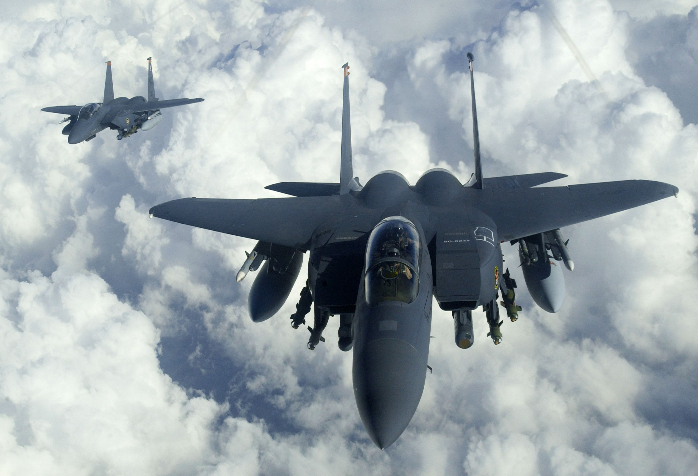

f-15 Eagle

O McDonnell Douglas F-15 Eagle é um caça táctico altamente manobrável, que pode operar sob todas as condições atmosféricas.
A superioridade do Eagle é conseguida na destreza e aceleração, alcance, armamento e aviónica. O F-15 dispõe de sistemas eletrónicos e armamento para detectar, focar, perseguir e atacar aviões inimigos quer em espaço aéreo aliado ou inimigo. Os sistemas de armamento e controle de voo foram desenhados para que uma única pessoa possa realizar combate ar-ar com segurança e eficácia.
Um F-15D Eagle da Base Aérea de Tyndall, da Flórida, Estados Unidos, liberando contra-medidas
A aceleração e agilidade do F-15 são conseguidas através de dois motores de elevada potência e reduzida carga alar, fatores vitais na capacidade de manobra, permitindo elevada velocidade ascensorial, alto teto operacional, e capacidade superlativa de manutenção de curva sustentada, características favoráveis em combate em altas e médias altitudes.
proximo